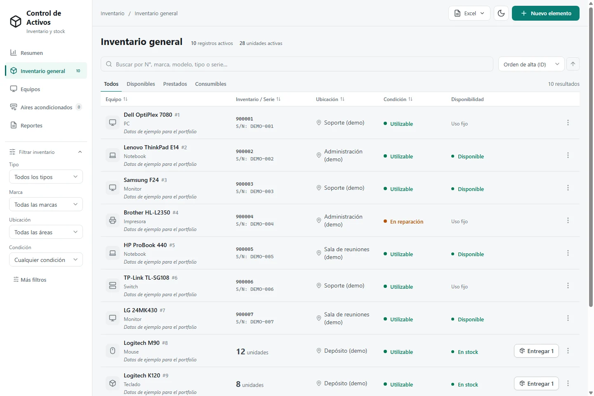
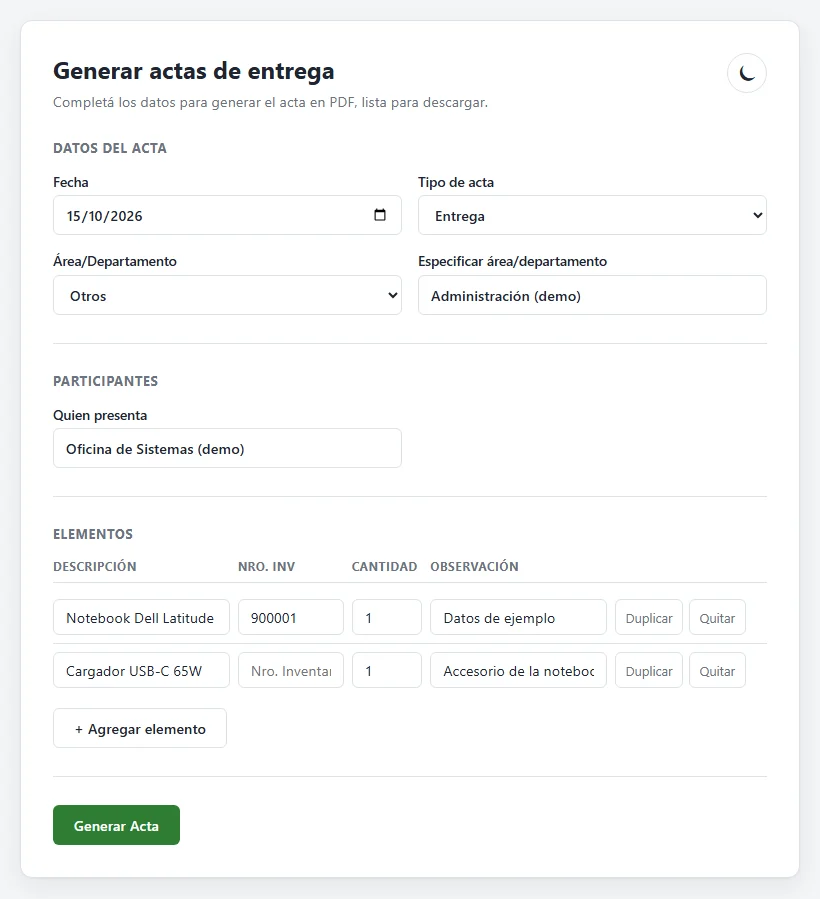
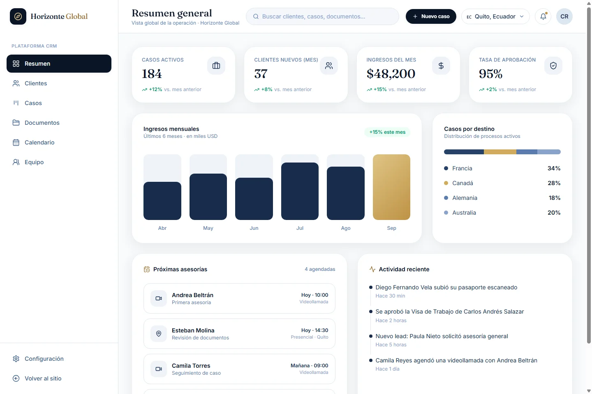
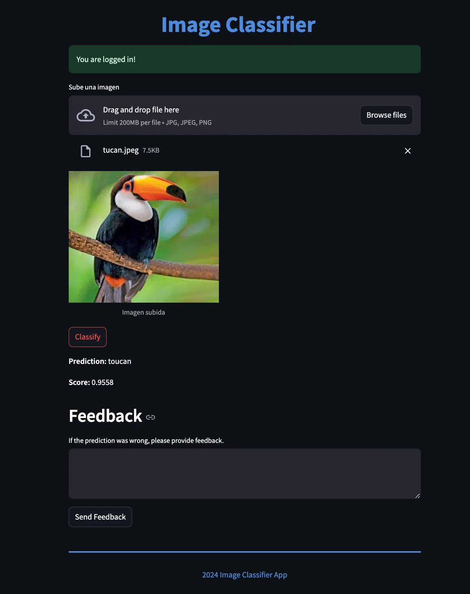

Sistema de Inventario
Del Excel a SQL Server, con gestión web del inventario.
ResultadoGestión web con SQL Server: búsqueda, filtros, préstamos e historial de movimientos.
En desarrollo avanzadoGo · SQL Server · excelize
Franco Sebastian GutierrezSoftware Developer · Chaco, Argentina · Remoto
Disponible para empleo y proyectos freelance
Desarrollo aplicaciones web, herramientas internas y servicios con modelos de datos para empresas, organismos y emprendimientos: desde la base de datos hasta la interfaz, con Go, Python y React.
01 Perfil
Soy Franco, desarrollador de software. Trabajo en dos frentes con la misma dedicación: el desarrollo web y backend, y el machine learning.
En web construyo APIs, herramientas internas e interfaces con Go, Python y React, y me ocupo de cómo se despliegan con Docker y Linux.
En machine learning, con formación en AnyoneAI, analizo datos, entreno y comparo modelos con Scikit-learn y LightGBM, e integro modelos en servicios con FastAPI y Redis.
Puedo sumarme a un equipo desde cualquiera de los dos lados y aprovecho los proyectos que necesitan ambos.
Ver mi perfil de GitHubPasantía
Desarrollo de software
Casa de Gobierno de la Provincia del Chaco · desde abril de 2026
Herramientas internas en Go: Sistema de Inventario con SQL Server y Generador de Actas, desplegados con Docker en Proxmox.
Freelance
Desarrollo web
Proyectos para clientes
Horizonte Global: landing multilingüe y CRM en React para una agencia de viajes.
Formación
Machine Learning
AnyoneAI
Clasificador de imágenes, Home Credit y pipeline ELT de ingresos y entregas.
Estudios
Tecnicatura Universitaria en Programación
UTN · Facultad Regional Resistencia
En curso desde 2022.
02 Software
Dos sistemas en Go que automatizan trabajo administrativo, inventario y actas, una demo frontend en React para un proyecto freelance y una app personal.

Del Excel a SQL Server, con gestión web del inventario.
ResultadoGestión web con SQL Server: búsqueda, filtros, préstamos e historial de movimientos.
En desarrollo avanzadoGo · SQL Server · excelize

Documentos administrativos, generados desde la web.
TerminadoGo · LibreOffice · Docker Compose

Landing y CRM para una agencia de viajes.
Demo frontendReact · React Router · Tailwind CSS

Una app de ahorro: la foto de lo que querés comprar se acerca con cada peso.
En usoReact · TypeScript · Tailwind CSS
03 ML & Data
Tres proyectos de AnyoneAI: un servicio de clasificación de imágenes, la comparación de modelos de riesgo crediticio y un pipeline ELT.

API de clasificación con ResNet50 preentrenada. Streamlit permite cargar imágenes y Redis coordina el procesamiento de las predicciones.
Python · FastAPI · Streamlit
Análisis de 307.511 solicitudes de crédito y comparación de regresión logística, Random Forest y LightGBM para estimar el riesgo de dificultades de pago.
Logistic Regression · Random Forest · LightGBM
Pipeline ELT para analizar ingresos y tiempos de entrega, segmentar por estados y categorías y visualizar tendencias del negocio.
Python · Pandas · SQLite
04 Servicios
Trabajo de forma remota con equipos y clientes de Argentina y otros países, en desarrollo de software y en machine learning.
Sistemas web para gestionar inventario, stock, préstamos u otros procesos que hoy viven en planillas, con base de datos y acceso desde el navegador.
Ejemplo: Sistema de InventarioActas, informes o formularios generados en DOCX y PDF a partir de datos cargados en una web, sin copiar y pegar.
Ejemplo: Generador de ActasLandings y paneles en React para presentar un negocio u organizar clientes y procesos.
Ejemplo: Horizonte GlobalLimpieza, exploración y consultas sobre tus datos para entender ventas, tiempos o tendencias del negocio.
Ejemplo: Ingresos y tiempos de entregaComparación de modelos y métricas de validación para estimar riesgos o resultados a partir de datos históricos.
Ejemplo: Home CreditModelos servidos a través de una API para clasificar imágenes o datos dentro de una aplicación.
Ejemplo: Clasificador de imágenesMe contás qué necesitás resolver y cómo lo hacés hoy.
Te envío por escrito el alcance, los tiempos y el presupuesto.
Avanzo por etapas y te muestro versiones funcionando.
Despliegue, documentación y soporte para los ajustes posteriores.
05 Contacto
Estoy disponible para proyectos freelance y oportunidades laborales, en Argentina y otros países. Contame en pocas líneas qué necesitás resolver, por el canal que te quede más cómodo.